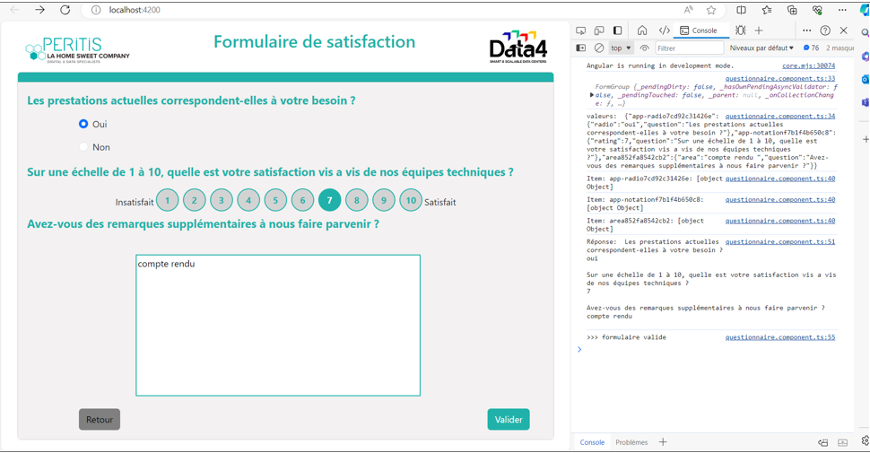
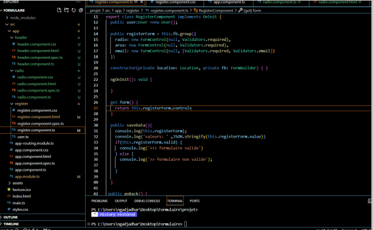
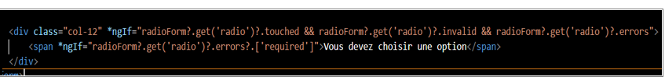

Présentation de l'entreprise
Depuis son établissement en 2012, PERITIS s'est solidement positionné en tant qu'expert dans le domaine de la DATA.
Avec l'évolution significative de ce secteur au cours des dernières années, l'entreprise a naturellement orienté ses compétences vers le BIG DATA, enrichissant ainsi son ADN d'une expertise solide et adaptative.
Formations réalisées
Objectifs formation Angular:
- Acquérir les bases avec Angular
Objectifs formation Github :
- Bien utiliser Github
- Formation recherchée
Objectifs Communs :
- Acquisition de compétences
- un + sur le CV
Projet - Formulaire de satisfaction
Les différents composants :
- Bouton radio
- Textarea
- Boutons de notation
- Questions personnalisable
Objectifs :
- Avoir un suivi régulier de la satisfaction client
- Recevoir des commentaires pour permettre une amélioration
Explication de code

Affiche le contenu de this.registerForm dans la console. Affiche la valeur du formulaire en format JSON dans la console. Vérifie si le formulaire est valide. Si le formulaire est valide, affiche "formulaire valide" dans la console. Sinon, affiche "formulaire non valide" dans la console.

Cette ligne est conditionnellement liée à l'attribut *ngIf, qui permet de conditionner l'affichage du contenu HTML
Conclusion du stage
Mon stage chez Peritis a été une expérience très enrichissante. J'ai eu l'opportunité d'acquérir des compétences précieuses en Angular et dans la mise en place de projets. Ce stage m'a également permis de clarifier ma direction professionnelle. Je suis reconnaissant envers toute l'équipe pour leur soutien.